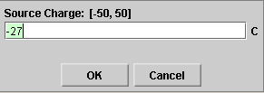

There are two basic control buttons. They are, from left to right:
-
Rewind. Removes any field points, field
vectors, field lines, and equipotential curves that
have been plotted. Also removes the Field Point Grid if
that was selected.
Rewind does not alter the last position of the source charge and the settings of the Source Charge and Vector Length Scale sliders.
-
 Reset. Resets the applet to its
default setting.
Reset. Resets the applet to its
default setting.


When the Field-Point-Grid button is selected,
a rectangular array of field points is displayed with
corresponding field vectors due to the source charge as
shown in the image above.
The source charge can be dragged with the mouse. However, the applet is designed so that the source charge cannot be dragged over the source points. (The applet is intended to show the 1/d2-property of the field. This property applies only for field points outside of the source charge ball of non-zero radius.)


When a field point is established by clicking in the
applet window with the mouse, the field point is drawn as
a small circle in green and the electric field vector at
that point is automatically drawn as well. If you then
click on the Field-Line button , the electric
field line through the field point will be drawn in
green.
When another field point is selected with the mouse, the color of the previous field point and field vector is changed to grey while the new field point and vector are shown in green.
The image above shows three field points with corresponding field vectors in grey and the most recent field point and field vector in green. Field lines are drawn through the first three field points. About the red circles see the next point on Equipotential Lines.

When a field point is established by clicking in the
applet window with the mouse, the field point is drawn as
a small circle in green and the electric field vector at
that point is automatically drawn as well. If you then
click on the Equipotential-Line button , the
equipotential line through the field point will be drawn
in red. In the present case, these "lines" are circles.
When another field point is selected with the mouse, the color of the previous field point and field vector is changed to grey while the new field point and vector are shown in green.
The preceding image under "3. Field Line" shows three field points with corresponding field vectors in grey and the most recent field point and field vector in green. The three red circles are the equipotential lines through the three field points in grey.
The Source Charge slider allows you to change the charge residing on the source object by dragging the slider tab.
Clicking on the slider to the left or right of the slider tab allows fine adjustment of the slider setting.
Clicking on the Input Dialog button  of the slider will open a dialog for
entering an exact value for the slider setting. The
dialog for the Source Charge-slider is illustrated
below. The range in which values can be entered, from -50
C to 50 C in this case, is indicated above the data entry
field.
of the slider will open a dialog for
entering an exact value for the slider setting. The
dialog for the Source Charge-slider is illustrated
below. The range in which values can be entered, from -50
C to 50 C in this case, is indicated above the data entry
field.

The charge on the source can be positive or negative or zero. This nature of the charge of the source object is indicated by the colors red, grey, or blue, respectively. In the case illustrated here, the source chare is positive so that the source is colored red.

The Vector Length Scale slider allows you to adjust the lengths of the arrows representing the field vectors by dragging the slider tab. The slider adjusts all vector arrows by the same scale factor.
The slider is qualitative and does not have the usual functionality of exact data entry by means of a data entry field. However, the slider can be adjusted one step at a time by clicking on the slider to the left or to the right of the slider tab.
To establish a field point outside the source object, click in the applet window with the mouse. The field point will be drawn as a small circle in green and the electric field vector at that point will automatically be drawn as well, in green. The image above shows one such field point and field vector.
It also shows three more field points and field vectors in grey. When a new field point is selected with the mouse, the color of the previous field point and field vector is changed to grey while the latest field point and vector are shown in green.